Agropecuária e Transformação Econômica
Tema 2 · Projeto de Ciência de Dados
Documentação completa com todos os gráficos explicados
Equipe: Grupo C
Raquel Albuquerque Quirino · Amanda Lira Andrade Botelho ·
João Igor Vidal de Andrade · Sofya Emily Oliveira
Repositório: github.com/andradebyte/projeto-ciencia-de-dados-unifor
Fontes: IBGE / SIDRA
Sumário
- O que é o projeto
- Contexto, problema e pergunta central
- Os datasets (fontes de dados)
- Estrutura do repositório
- Pipeline de preparação e diagnóstico de qualidade
- Análise exploratória — PIB (28 gráficos)
- Análise exploratória — PAM (25 gráficos)
- Análise exploratória — PPM (22 gráficos)
- Mapas geoespaciais — PIB, PAM e PPM
- Cruzamento das bases (6 gráficos)
- Estudos de caso
- Dashboard (protótipo)
- Limitações e cuidados metodológicos
- Números-chave
- Como rodar / reproduzir
- Próximos passos
1. O que é o projeto
É um projeto de análise exploratória de dados sobre a agropecuária dos municípios do Ceará e a sua relação com a economia local, usando dados oficiais do IBGE (SIDRA). O objetivo não é prever nem modelar causalidade, mas descrever e entender como o perfil agropecuário cearense mudou ao longo de duas décadas (2003–2024) e como isso se conecta com a transformação econômica dos municípios.
O trabalho cobre o ciclo completo de um projeto de dados:
- Coleta — download programático via API do IBGE/SIDRA;
- Compreensão e inventário — inspeção das bases, mapeamento de anomalias;
- Higienização e preparação — pipeline automatizado de limpeza e padronização;
- Análise exploratória — por base (PIB, PAM, PPM) e cruzada;
- Visualização — gráficos, mapas coropléticos e um protótipo de dashboard;
- Comunicação — relatórios, pitch e documentação.
O recorte territorial é o estado do Ceará (184 municípios), sempre com Brasil e Ceará como referências de comparação.
2. Contexto, problema e pergunta central
Tema escolhido
Agropecuária e transformação econômica.
O problema
Os municípios cearenses apresentam trajetórias distintas de transformação agropecuária ao longo das últimas duas décadas — tanto na composição produtiva (o que produzem) quanto na importância da agropecuária para a economia local. Muitos estão no semiárido e são expostos a instabilidades climáticas severas (secas), o que pressiona suas matrizes produtivas.
Pergunta central
Como o perfil agropecuário dos municípios cearenses se transformou entre 2003 e 2024, e como essas mudanças se relacionam com a sua estrutura econômica?
Hipótese de trabalho
Investiga-se a associação entre as perdas agrícolas (a "frustração de safra", diferença entre área plantada e colhida na PAM) e a adoção de estratégias de resiliência, como o crescimento de rebanhos de pequeno porte (caprinos e ovinos, na PPM), cruzando essa transição com a evolução da participação do VAB agropecuário no PIB municipal (base PIB).
Postura metodológica: a análise é estritamente observacional e exploratória — respeitamos a defasagem temporal das bases financeiras (VAB só até 2021) e não formulamos conclusões causais.
3. Os datasets (fontes de dados)
Todas as bases vêm do SIDRA/IBGE, baixadas pela API oficial (agregados v3), armazenadas como CSV em dados/raw/. Os metadados completos (URLs, filtros, hashes SHA-256, horários) estão em dados/fontes.csv.
| Tabela SIDRA | Nome | Conteúdo | Período | Registros tratados |
|---|
| 5457 | PAM | Produção Agrícola Municipal | 2003–2024 | 143.220 |
| 3939 | PPM | Pesquisa Pecuária Municipal (efetivo dos rebanhos) | 2003–2024 | 20.460 |
| 5938 | PIB dos Municípios | PIB, VAB total, VAB agropecuário e participação | 2003–2023 | 15.624 |
PAM — tabela 5457
5 arquivos (um por variável): área plantada (8331), área colhida (216), quantidade produzida (214), rendimento médio (112) e valor da produção (215). Produtos: milho, feijão, mandioca, cana-de-açúcar, banana, castanha de caju e melão.
PPM — tabela 3939
Variável 105 (efetivo, em cabeças). Espécies: bovino, caprino, ovino, suíno (total) e galináceos (total).
PIB dos Municípios — tabela 5938
Variáveis: PIB (37), VAB total (498), VAB agropecuário (513) e participação (516).
Disponibilidade (crítico): o PIB vai até 2023; as variáveis de VAB vão só até 2021 (em 2022–2023 retornam ...). Isso define o "teto" de qualquer análise que dependa do VAB: 2021.
Há ainda a malha municipal (malha_municipal_ce_2022.geojson), usada nos mapas, unida às tabelas pela chave codarea (código IBGE de 7 dígitos).
4. Estrutura do repositório
projeto-ciencia-de-dados/
├── app/main.py # protótipo de dashboard (Streamlit)
├── dados/
│ ├── analytical/ # cruzamento_pam_ppm_pib.csv
│ ├── processed/ # pam/ppm/pib_tratado.csv (saída do pipeline)
│ ├── raw/ # bases brutas + malha municipal
│ ├── fontes.csv # metadados de download
│ └── README_DADOS.md
├── docs/ # relatórios e documentação
├── notebooks/ # análises interativas (origem dos .py)
├── src/ # pipeline + análises (data_loader, cleaner, standardizer, pipeline, análises, cruzamento)
├── requirements.txt
└── README.md
5. Pipeline de preparação e diagnóstico de qualidade
Etapas do pipeline (src/pipeline.py)
- Leitura (
data_loader.py): lê os CSVs com tipagem forçada como string (preserva zeros à esquerda dos códigos).
- Limpeza (
data_cleaner.py): remove duplicatas pela chave primária oficial, mantendo o último registro.
- Padronização (
data_standardizer.py): colunas em snake_case, .strip() nas categorias e tratamento dos símbolos especiais na coluna valor.
- Salvamento: grava as bases tratadas em
dados/processed/.
Regras de tratamento dos símbolos do IBGE
| Símbolo | Significado | Tratamento |
|---|
- e 0 | ausência real (não plantou/colheu, contagem zerada) | → 0.0 |
X | dado inibido (sigilo estatístico) | → NaN + flag valor_is_inibido |
.. e ... | não se aplica / não disponível | → NaN |
Diagnóstico de qualidade (o que encontramos de "sujo")
- 1.116 registros ausentes mascarados por
../... — 100% no PIB (o VAB 2022–2023 indisponível). PAM e PPM: 0 ocorrências.
- Sigilo estatístico (
X): 0 incidências nas 3 bases (no nosso recorte).
- Símbolo
-: 314.670 ocorrências na PAM (municípios que não plantam determinada cultura); 5 na PPM.
- Inconsistências hierárquicas: soma dos municípios difere do total oficial em 298 recortes (PAM) e 66 (PIB).
- Integridade das chaves: necessidade de preservar zeros à esquerda nos códigos municipais.
Volumetria final pós-tratamento: PAM 143.220 · PPM 20.460 · PIB 15.624 registros.
6. Análise exploratória — PIB
A análise do PIB é o ponto de partida: primeiro entendemos o crescimento do estado, depois onde ele acontece no território, e por fim investigamos o caso mais chamativo. Os 28 gráficos abaixo seguem essa ordem.
Como o PIB do Brasil e do Ceará evoluíram entre 2003 e 2023?
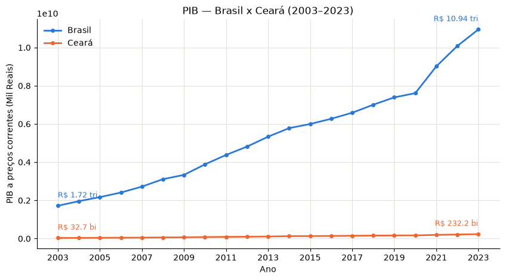
Leitura: Linha do tempo do PIB (valores correntes). As duas curvas crescem de forma contínua, com o Ceará saltando de R$ 32,7 bi para R$ 232,2 bi (7,1×). É o ponto de partida: mostra que o estado cresceu muito, mas ainda pequeno frente ao Brasil.
Quantas vezes o PIB de cada um cresceu, ano a ano, em relação a 2003?
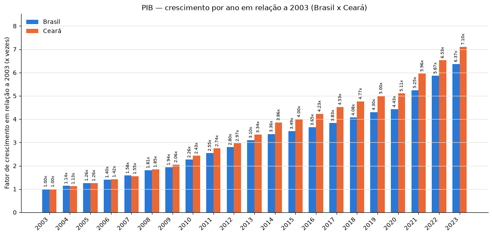
Leitura: Curva de crescimento acumulado (índice base 2003 = 1). Permite ler o ritmo relativo: o Ceará cresce mais rápido que o Brasil em vários momentos, o que é o gancho para investigar onde esse crescimento acontece.
Quantas vezes o PIB do Brasil é maior que o do Ceará, em cada ano?
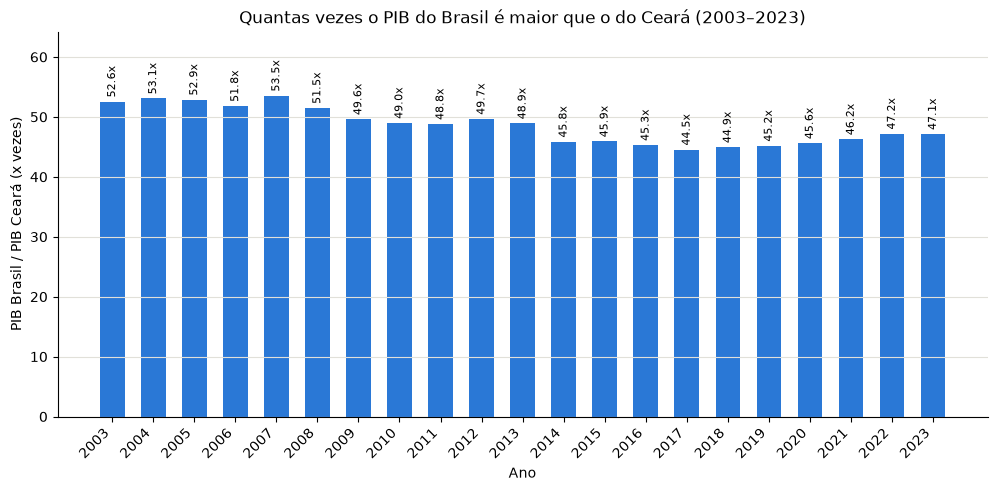
Leitura: Razão Brasil/Ceará ao longo do tempo. A distância entre as duas economias é enorme e relativamente estável — o Ceará é uma fração pequena do PIB nacional, o que reforça a importância de olhar para dentro do estado.
Qual a participação do Ceará no PIB do Brasil, ano a ano?
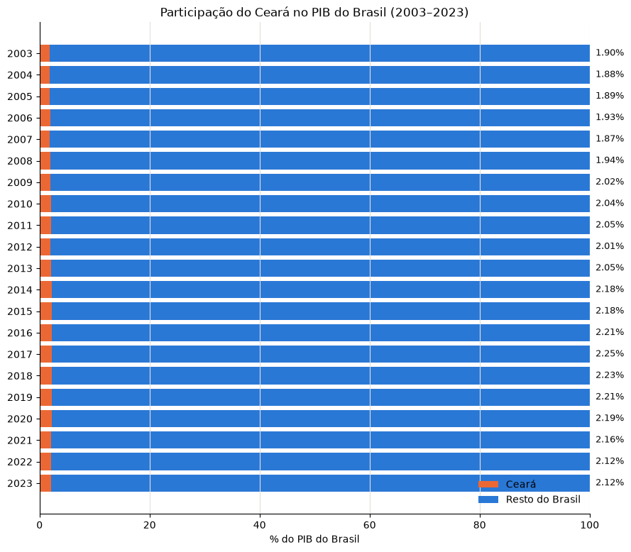
Leitura: Percentual do PIB brasileiro que vem do Ceará. Mostra o peso relativo do estado e sua trajetória de leve expansão ou estabilidade ao longo das duas décadas.
Como essa participação do Ceará mudou entre 2003 e 2023?
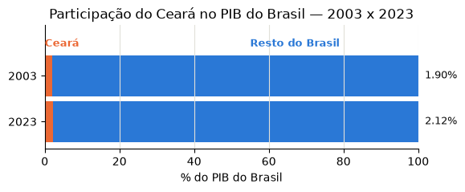
Leitura: Variação do percentual de participação. Fecha a leitura de contexto nacional: o Ceará ganhou (ou perdeu) poucos pontos percentuais, ou seja, cresceu em linha com o país.
Como foi o PIB de cada um dos 184 municípios do Ceará?
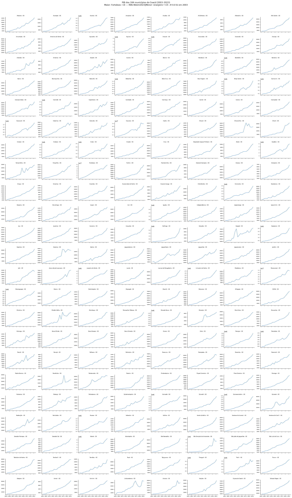
Leitura: Visão geral de todas as séries municipais sobrepostas. A dispersão enorme entre as curvas é o primeiro sinal de desigualdade: poucos municípios têm PIB grande, a maioria é pequena.
Quais os 10 municípios com maior PIB e como eles evoluíram?
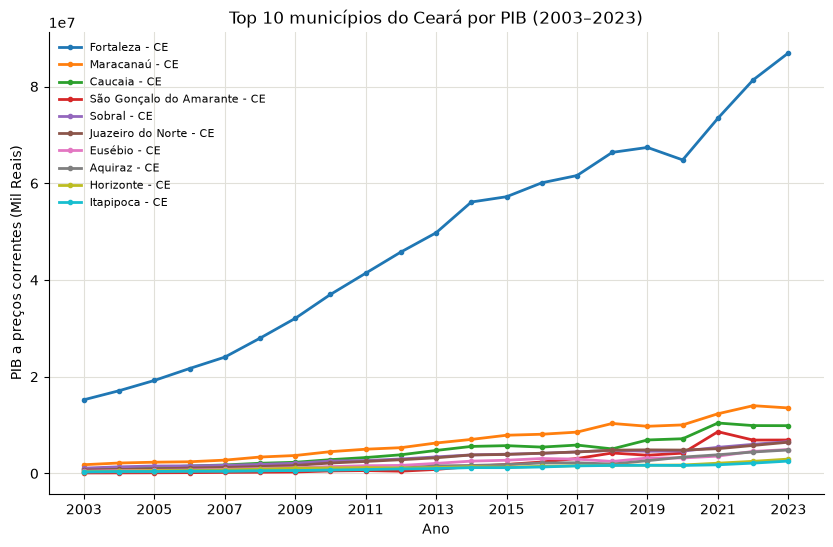
Leitura: Séries dos 10 maiores PIB. Fortaleza lidera isolada (R$ 86,9 bi em 2023), seguida de Maracanaú e Caucaia. As curvas mostram que a concentração no topo persiste.
Quais municípios mais cresceram em PIB entre 2003 e 2023?
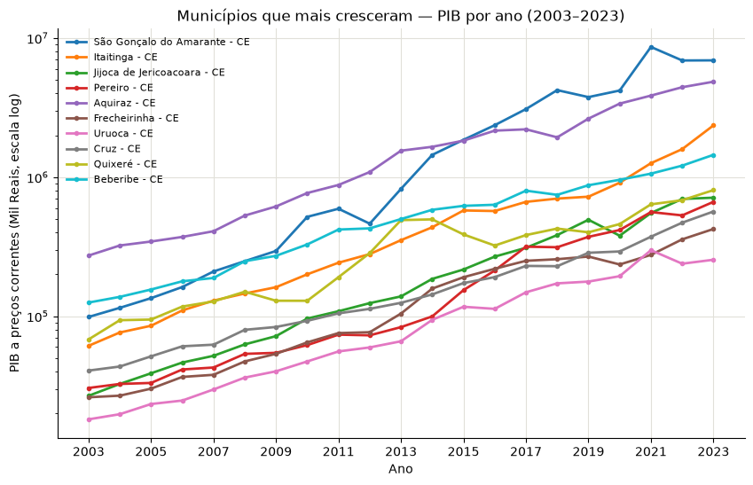
Leitura: Ranking de fator de crescimento. São Gonçalo do Amarante aparece disparado com 70×, quase o dobro do segundo (Itaitinga, 38,4×). É aqui que nasce a pergunta-chave do projeto.
Quais municípios menos cresceram em PIB entre 2003 e 2023?
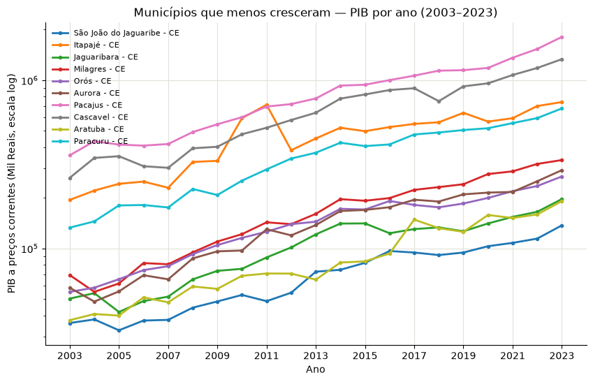
Leitura: Ranking invertido (menores fatores). Mostra o outro extremo: municípios que quase não cresceram, evidenciando o quanto a trajetória econômica é desigual no estado.
Qual foi o de Baturité nesse período?
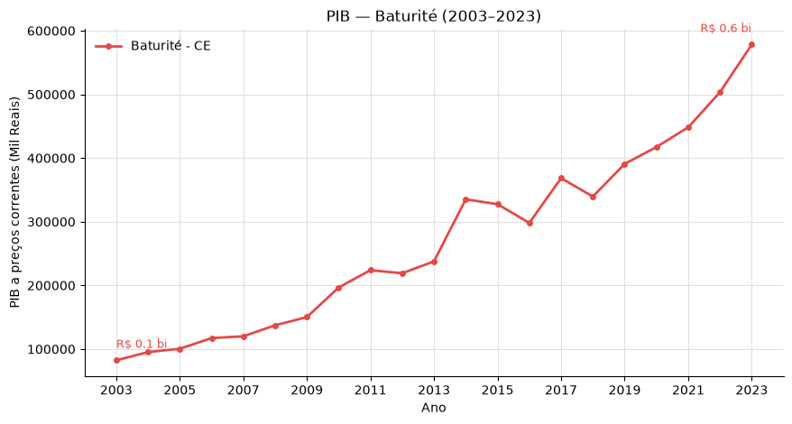
Leitura: Série individual de Baturité. Um exemplo concreto de leitura de um município médio, usado para ancorar a análise em um caso específico fora das pontas.
Existem outliers no PIB dos municípios? Como é a distribuição por ano?
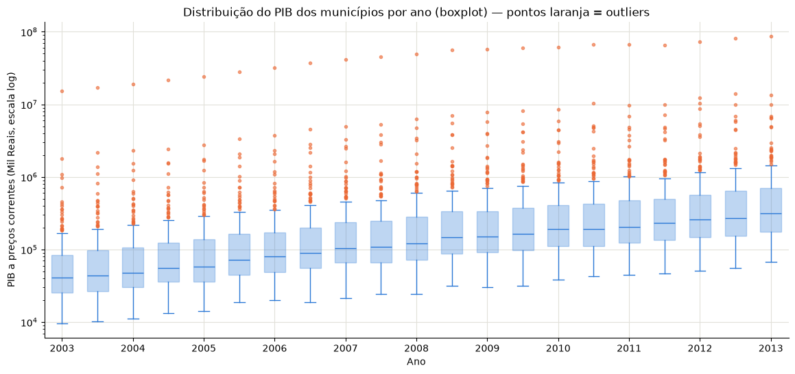
Leitura: Boxplot da distribuição do PIB municipal. Mostra a forte assimetria: a mediana é baixa e há uma cauda longa para a direita (Fortaleza e poucos outros são outliers claros).
Como fica a distribuição do PIB de todos os municípios, ano a ano, em pontos?
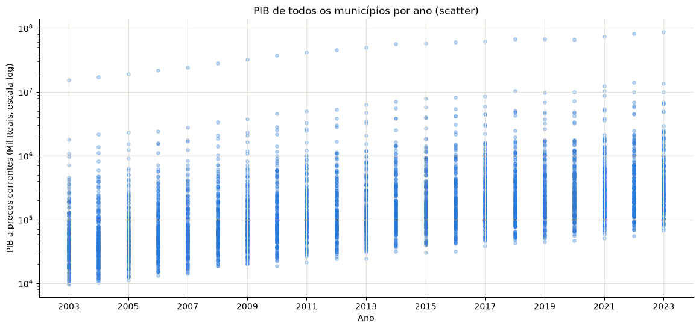
Leitura: Distribuição em pontos (strip) por ano. Complementa o boxplot, deixando visível a dispersão e o deslocamento da massa de municípios ao longo do tempo.
Como foi o PIB de Fortaleza, Maracanaú, Eusébio, Pacajus, Cascavel, Baturité, Guaramiranga, Quixadá e Aiuaba?
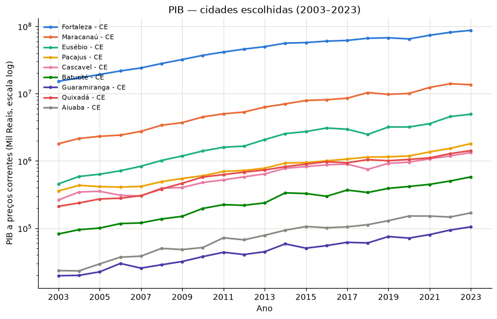
Leitura: Séries de nove municípios escolhidos a dedo (do maior ao menor). Mostra, num mesmo gráfico, escalas completamente diferentes de economia no Ceará.
Quanto cada município representa do PIB do Ceará em 2023?
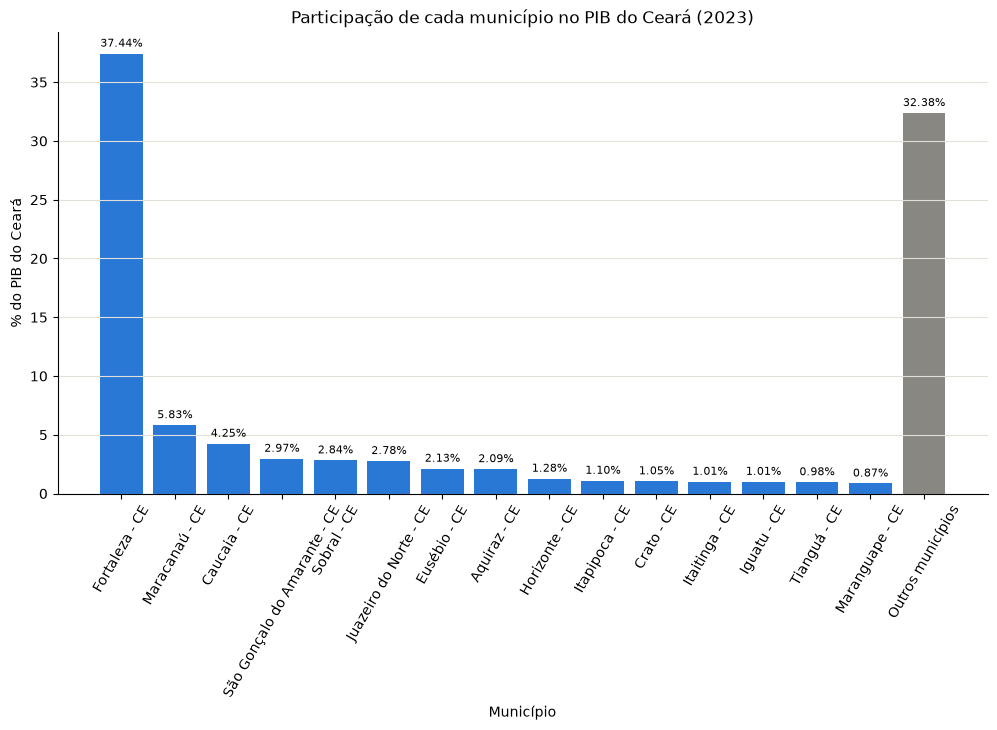
Leitura: Participação percentual de cada município em 2023. Fortaleza responde por ~37% do PIB estadual; o restante se pulveriza entre os demais 183 municípios.
Quanto cada município representava do PIB do Ceará em 2003?
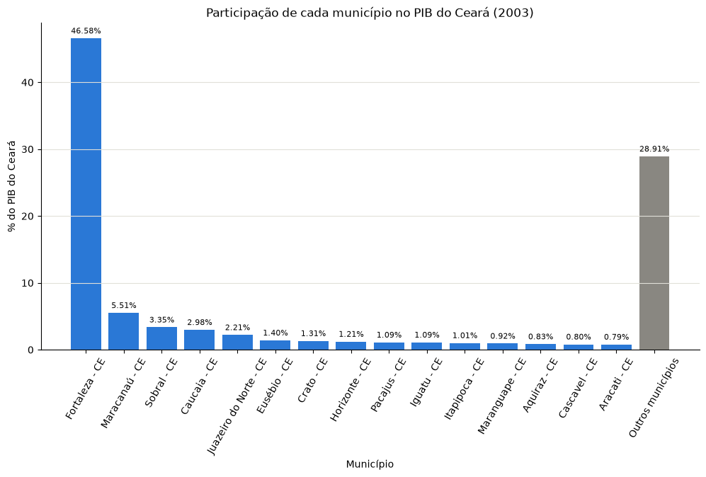
Leitura: Participação percentual em 2003. Ao comparar com 2023, vê-se que Fortaleza tinha ~46,6% e caiu — a economia estadual se desconcentrou um pouco.
Como o PIB do Ceará se reparte entre os 184 municípios, visualmente?
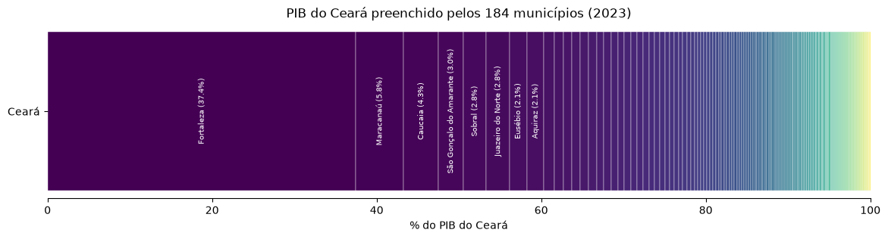
Leitura: Gráfico de partição (tipo treemap/pizza) da composição do PIB. A imagem vale mais que mil números: um pedaço enorme para a capital e uma 'poeira' de municípios pequenos.
Como se compara o PIB de Fortaleza, Maracanaú, Caucaia e São Gonçalo do Amarante?
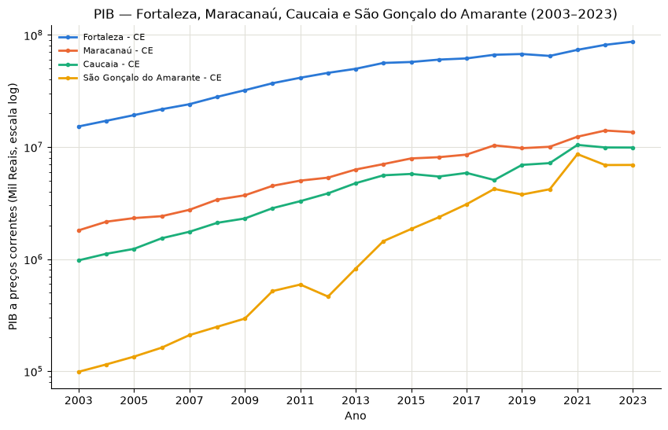
Leitura: Séries das quatro cidades no mesmo gráfico. Fortaleza em patamar altíssimo; Maracanaú e Caucaia intermediários; São Gonçalo do Amarante parte de baixo e cruza para cima, evidenciando o salto.
Qual a variação percentual anual do PIB dessas 4 cidades?
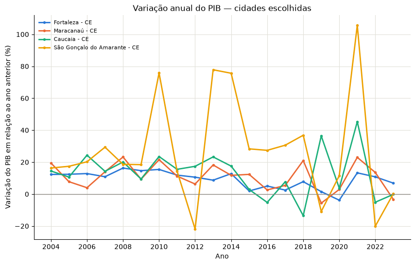
Leitura: Taxa de variação ano a ano. São Gonçalo do Amarante tem picos de crescimento percentual muito acima dos demais em anos específicos — coerente com um choque de investimento pontual.
Como mudou a posição no ranking de PIB dessas 4 cidades ao longo do tempo?
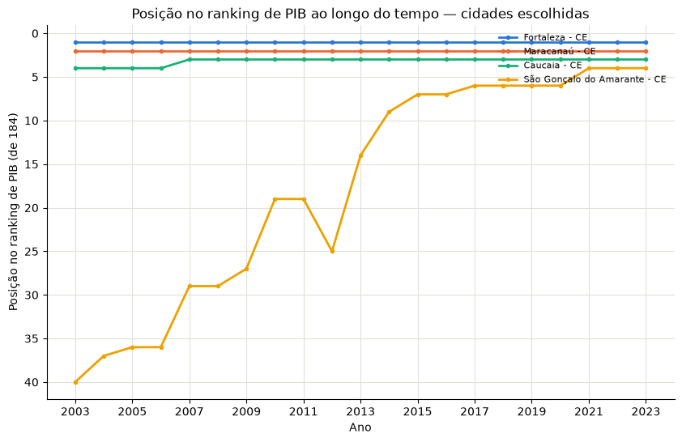
Leitura: Evolução da posição no ranking. São Gonçalo do Amarante sobe várias posições e se aproxima das grandes; é a versão 'ranking' do salto de 70×.
Como evoluiu o VAB total do Brasil e do Ceará?
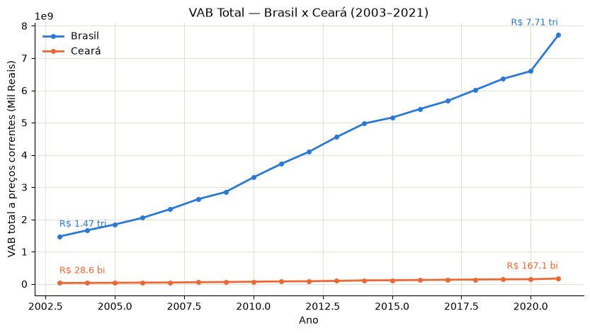
Leitura: Série do Valor Adicionado Bruto total. Similar ao PIB, mas focado na riqueza gerada; confirma o crescimento do estado e introduz a métrica usada no cruzamento.
Quais os 10 municípios com maior VAB total?
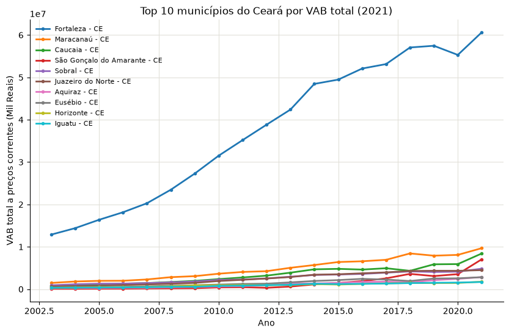
Leitura: Ranking de VAB total. Liderado por Fortaleza e Maracanaú, com a mesma lógica de concentração do PIB.
Quanto cada município representa do VAB total do Ceará?
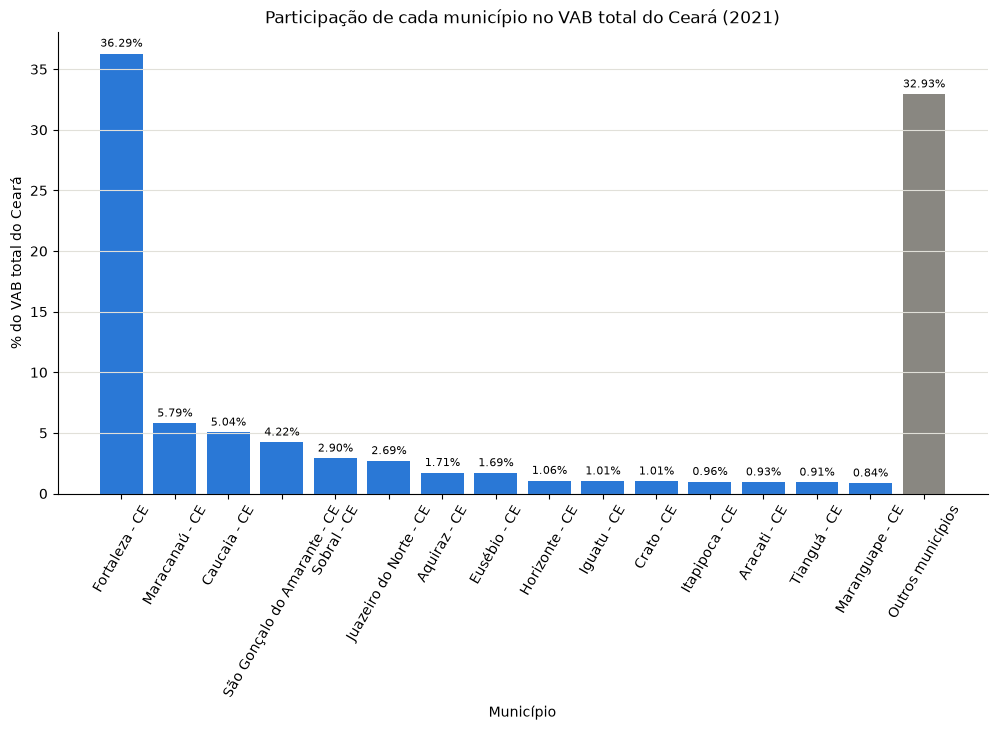
Leitura: Participação no VAB total. Reforça a concentração na capital e nos municípios industriais da Região Metropolitana.
Como evoluiu o VAB agropecuário do Brasil e do Ceará?
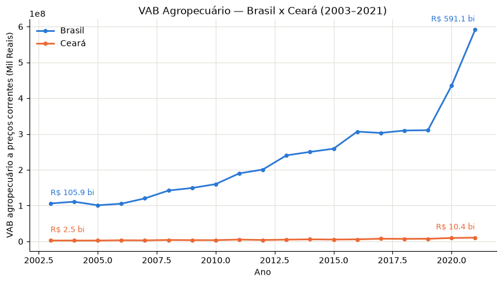
Leitura: Série do VAB da agropecuária. Cresce, mas em ritmo bem menor que o total — primeiro indício de que a agropecuária perde peso relativo na economia.
Quais os 10 municípios com maior VAB agropecuário?
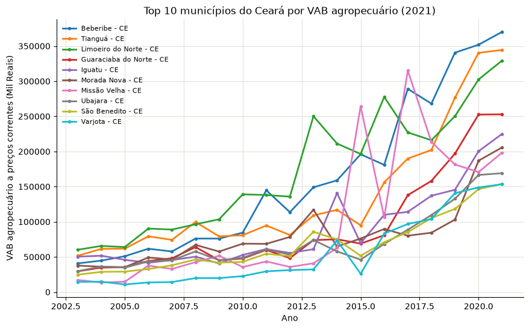
Leitura: Ranking do VAB agropecuário (2021). Beberibe, Tianguá e Limoeiro do Norte lideram — municípios ligados à fruticultura e ao caju.
Quanto cada município representa do VAB agropecuário do Ceará?
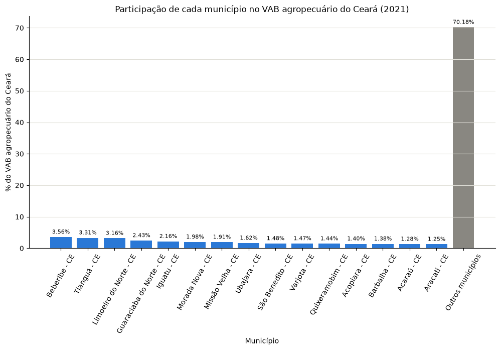
Leitura: Participação no VAB agropecuário. Bem menos concentrada que o PIB total: a produção agropecuária se espalha mais pelo território.
Como mudou o peso da agropecuária no VAB do Brasil e do Ceará?
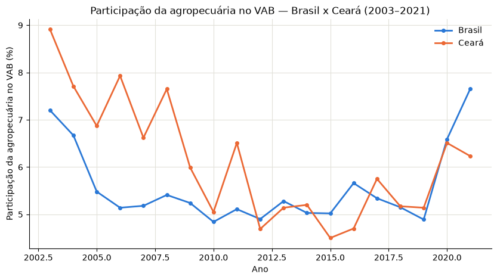
Leitura: Participação da agropecuária no VAB ao longo do tempo. A curva é declinante — confirma a transformação estrutural: a economia fica cada vez menos agrícola.
Quais municípios são mais dependentes da agropecuária?
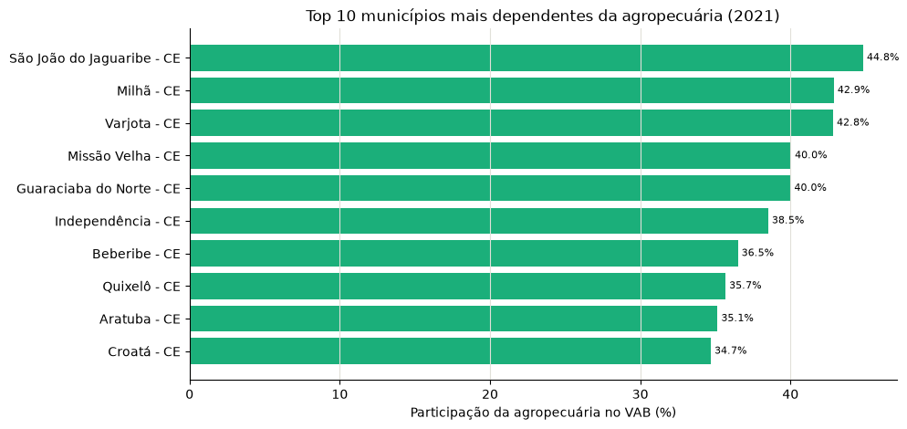
Leitura: Ranking da participação do VAB agro no VAB total (2021). São João do Jaguaribe (44,8%) e Milhã (42,9%) no topo; na outra ponta, Fortaleza e Maracanaú (0,2%). Define o mapa de 'dependência'.
Correlação entre Métricas (Municípios do Ceará)
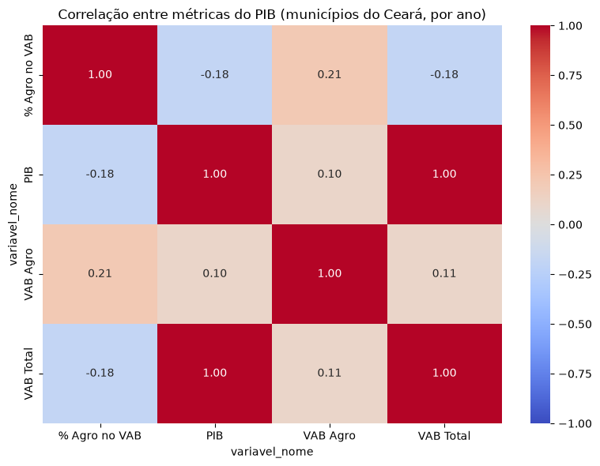
Leitura: Heatmap de correlação entre PIB, VAB total, VAB agropecuário e participação. PIB e VAB total são quase idênticos (correlação ~1); a participação da agro tem correlação negativa com o tamanho da economia — município grande tende a ser menos agropecuário.
7. Análise exploratória — PAM
A PAM descreve a produção agrícola em cinco métricas (área plantada, área colhida, quantidade, rendimento e valor) para sete culturas. Os gráficos seguem a mesma lógica: evolução Brasil/Ceará → participação do Ceará → municípios → estudos de caso → perda de safra e correlações.
Como evoluiu o valor da produção por produto, no Brasil?
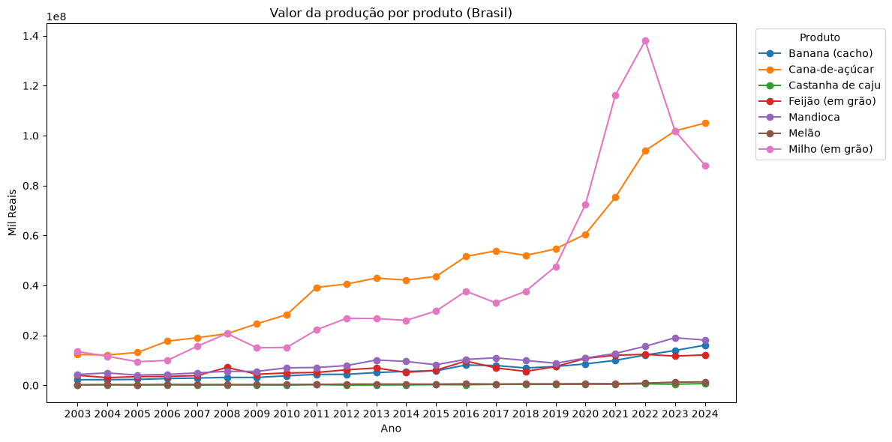
Leitura: Séries do valor da produção dos 7 produtos no Brasil. Cada produto tem sua trajetória; serve de referência nacional antes de focar no Ceará.
E no Ceará?
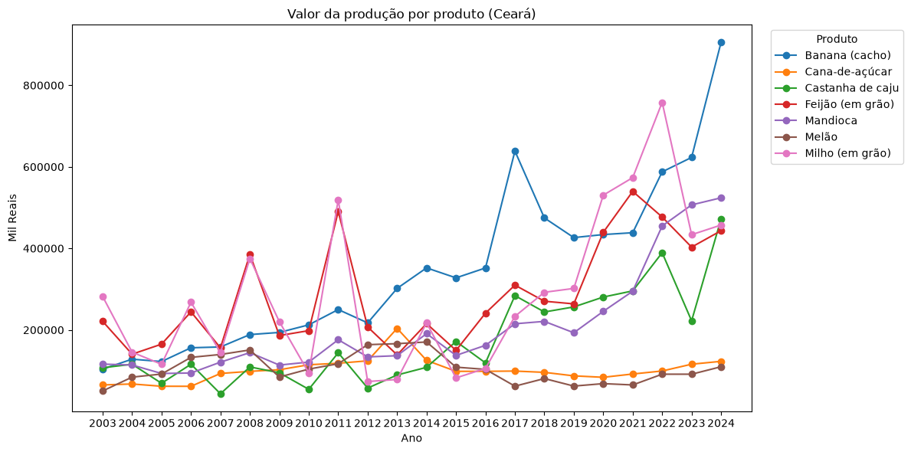
Leitura: Séries do valor da produção no Ceará. É aqui que aparece a inversão de liderança: a banana cresce 8,7× e ultrapassa o milho, que cresce só 1,6× e cai da 1ª para a 4ª posição.
Como evoluiu a área plantada por produto, no Brasil?
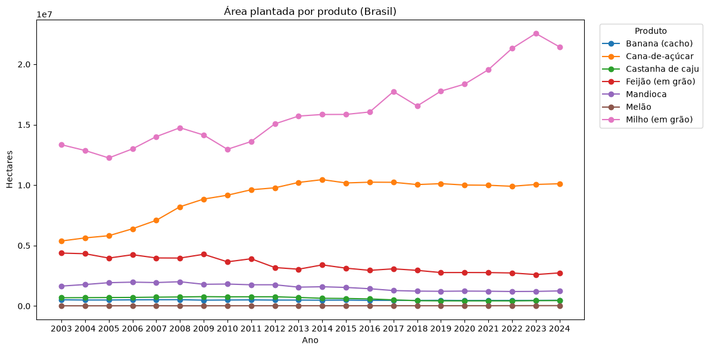
Leitura: Área plantada (hectares) por produto no Brasil. Mostra a dimensão física da produção, não monetária.
E no Ceará?
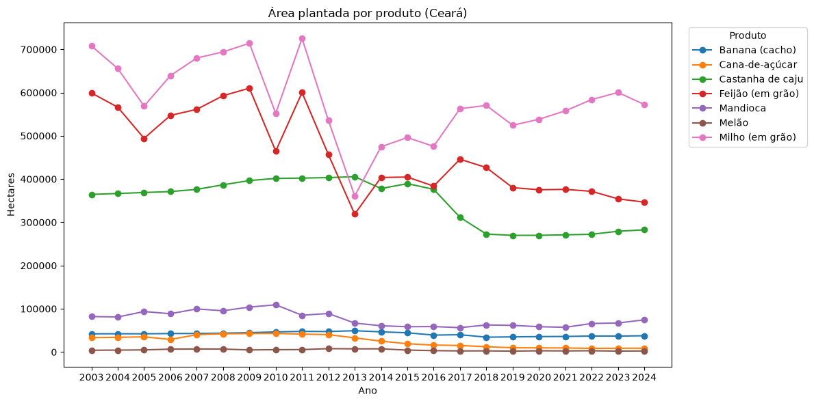
Leitura: Área plantada por produto no Ceará. Permite ver quais culturas expandiram ou encolheram em área, complementando a leitura de valor.
Como evoluiu a área colhida por produto, no Brasil?
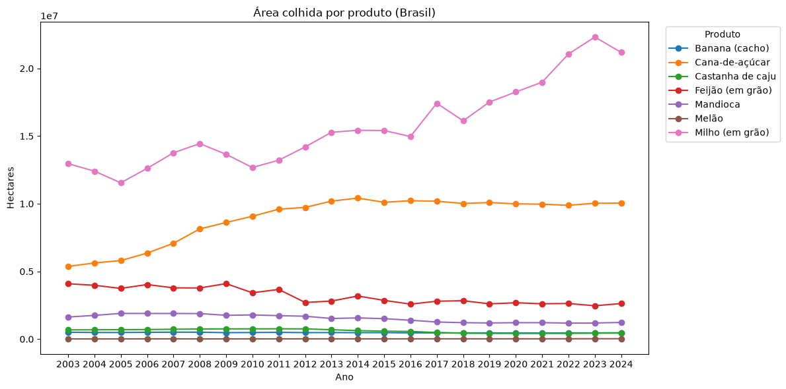
Leitura: Área colhida por produto no Brasil. A diferença entre plantada e colhida é o insumo para medir a frustração de safra.
E no Ceará?
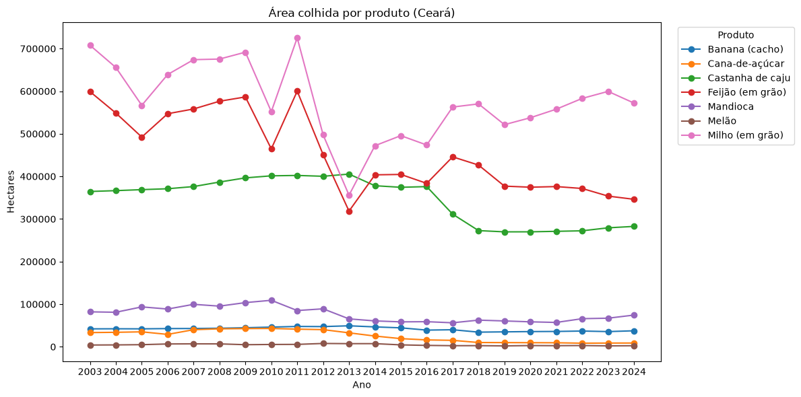
Leitura: Área colhida por produto no Ceará. Junto com a área plantada, revela o hiato (perda) entre o que se planta e o que se colhe.
Como evoluiu a quantidade produzida por produto, no Brasil?
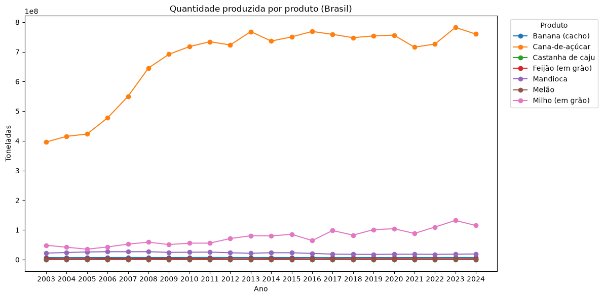
Leitura: Quantidade produzida (toneladas) no Brasil. Combina área e rendimento; mostra o volume físico colhido.
E no Ceará?
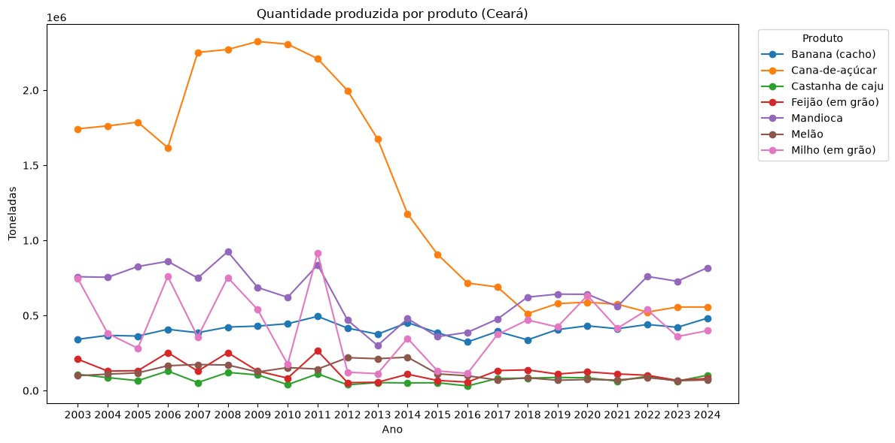
Leitura: Quantidade produzida por produto no Ceará. Evidencia quais culturas ganharam produtividade/volume de fato.
Como evoluiu o rendimento médio por produto, no Brasil?
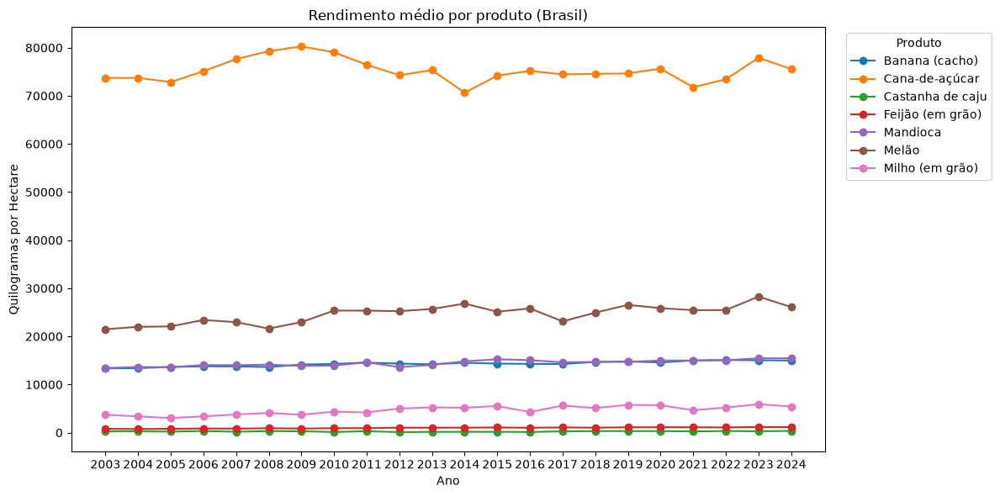
Leitura: Rendimento médio (kg/ha) no Brasil. Mostra ganho de produtividade — uma métrica-chave de eficiência agrícola.
E no Ceará?
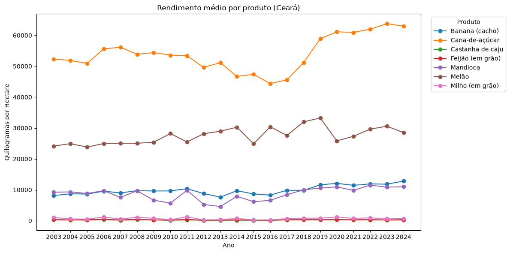
Leitura: Rendimento médio no Ceará. Permite separar 'cresceu porque plantou mais' de 'cresceu porque produz mais por hectare'.
Quanto o Ceará representa do valor da produção do Brasil, ano a ano?
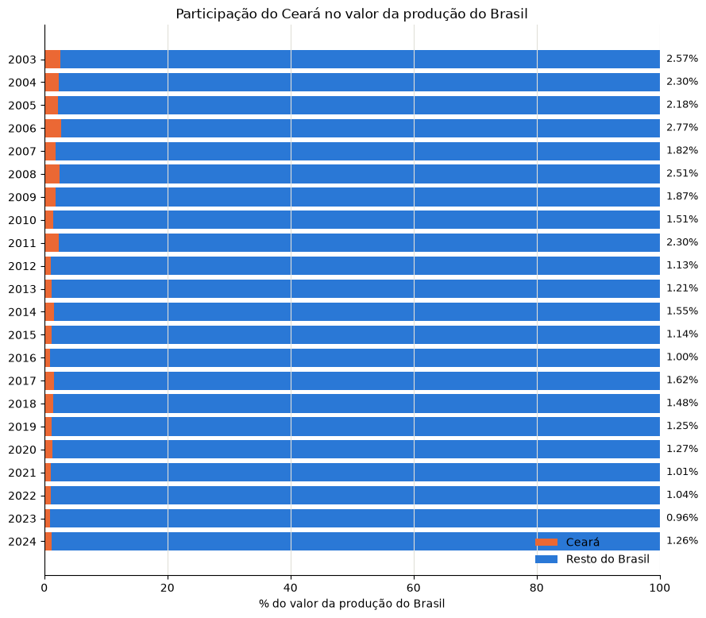
Leitura: Participação do Ceará no valor da produção nacional. Mostra o peso relativo do estado por produto, ano a ano.
Quanto o Ceará representa da área plantada do Brasil?
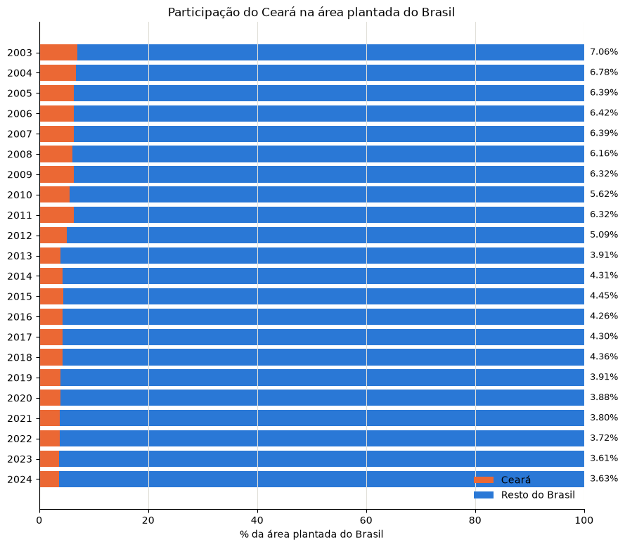
Leitura: Participação na área plantada nacional. Indica onde o Ceará é protagonista em extensão de lavoura.
Quanto o Ceará representa da área colhida do Brasil?
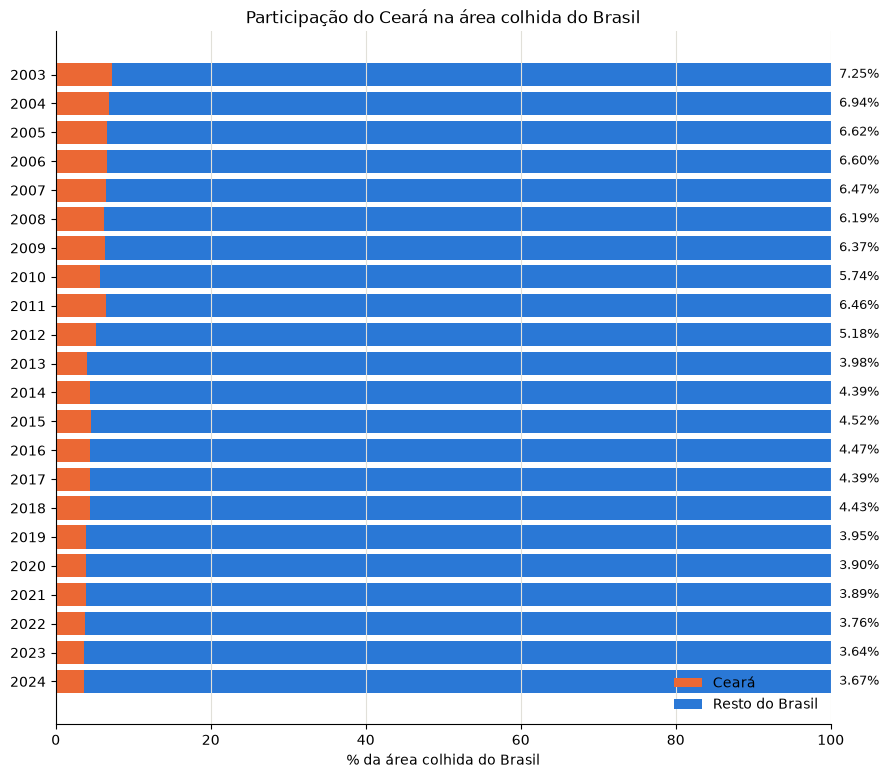
Leitura: Participação na área colhida nacional. Reforça a leitura de protagonismo físico do estado.
Quanto o Ceará representa da quantidade produzida do Brasil?
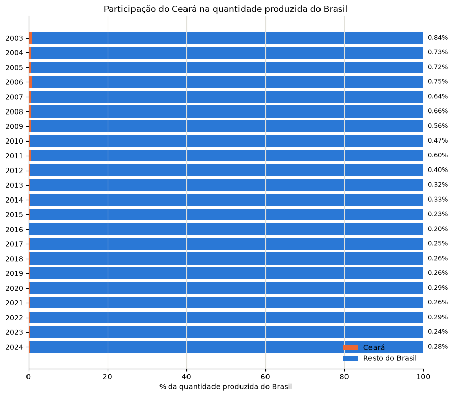
Leitura: Participação na quantidade produzida nacional. Completa o quadro de relevância do Ceará por produto.
Quais municípios têm maior/menor valor da produção, e como o Ceará se reparte (2003 x 2023)?
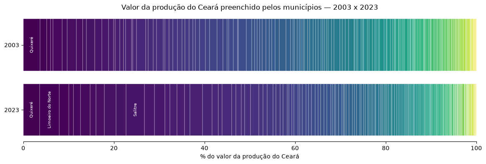
Leitura: Ranking e repartição do valor da produção por município, comparando 2003 e 2023. Mostra a concentração espacial e como os líderes mudaram (ex.: Limoeiro do Norte e Salitre no topo em 2023).
Quais municípios têm maior/menor área plantada (2003 x 2023)?
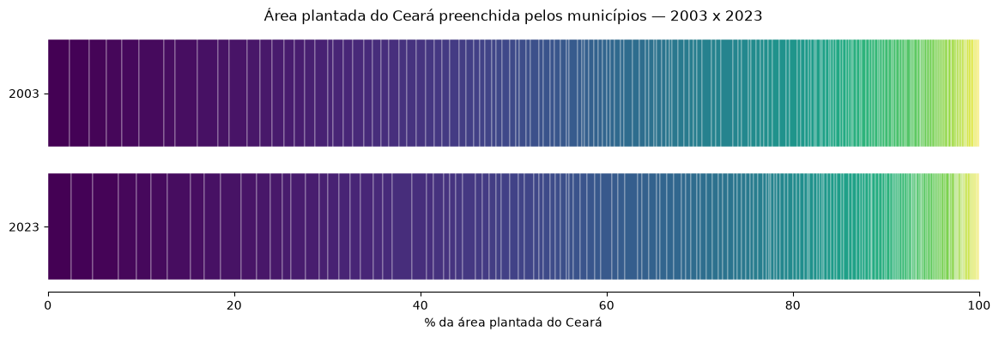
Leitura: Ranking e repartição da área plantada por município. Evidencia onde a lavoura fisicamente se concentra.
Quais municípios têm maior/menor área colhida (2003 x 2023)?
Leitura: Ranking e repartição da área colhida por município. Junto com a plantada, permite localizar onde há mais perda de safra.
Quais municípios têm maior/menor quantidade produzida (2003 x 2023)?
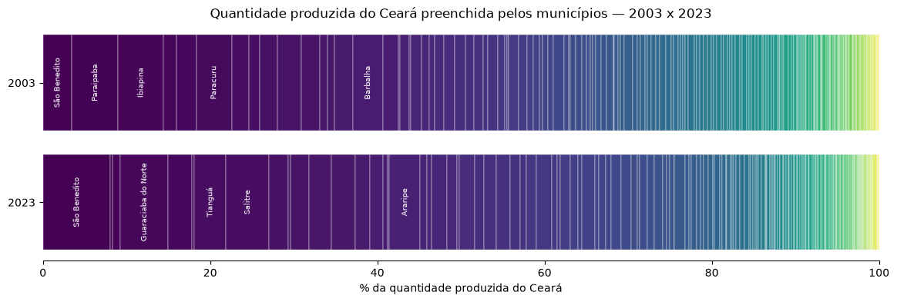
Leitura: Ranking e repartição da quantidade produzida. Mostra os polos de volume físico da agricultura cearense.
4 cidades nas métricas PAM — valor da produção
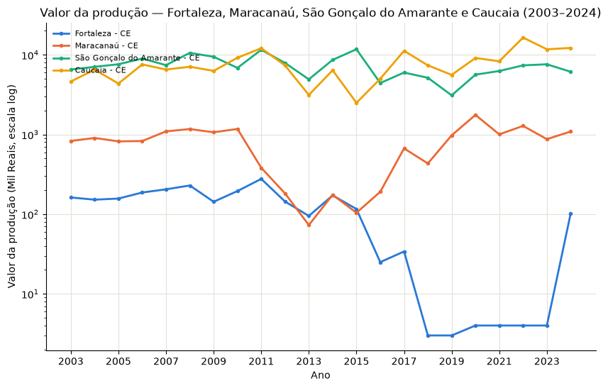
Leitura: Comparação de Fortaleza, Maracanaú, São Gonçalo do Amarante e Caucaia no valor da produção. Contextualiza as mesmas cidades do estudo de PIB sob a ótica agrícola.
4 cidades nas métricas PAM — área plantada/colhida
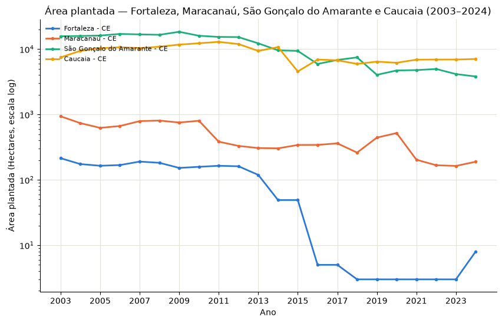
Leitura: Comparação das 4 cidades em área. Mostra que, em termos agrícolas, elas não são protagonistas — reforçando que o crescimento de SGA não vem da agricultura.
4 cidades nas métricas PAM — quantidade produzida
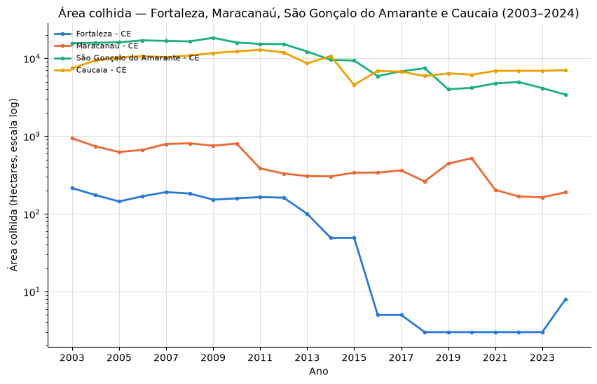
Leitura: Comparação das 4 cidades em quantidade. Complementa a leitura de volume físico.
4 cidades nas métricas PAM — rendimento médio
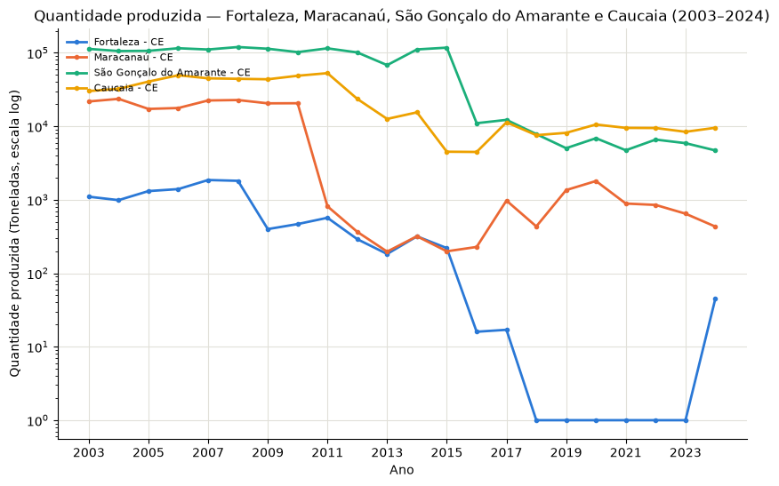
Leitura: Comparação das 4 cidades em rendimento (kg/ha). Permite ver se há diferença de produtividade entre elas.
Existe perda de safra (área plantada x colhida) no Ceará ao longo dos anos?
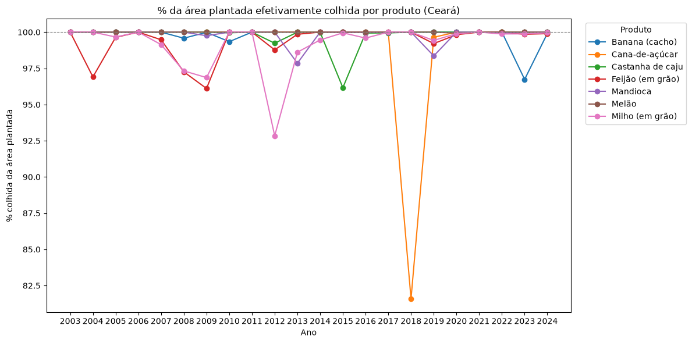
Leitura: Diferença entre área plantada e colhida ao longo do tempo. A área entre as duas curvas é a frustração de safra — peça central da hipótese de resiliência (municípios que perdem safra migrariam para atividades mais resistentes à seca).
Como se distribui o valor da produção entre os produtos, e existem outliers?
Leitura: Distribuição do valor por produto (boxplot). Mostra quais produtos têm valores mais dispersos e a presença de municípios-outliers com produções muito altas.
As métricas do PAM se correlacionam entre si?
Leitura: Heatmap de correlação entre as métricas. Área plantada e colhida são quase idênticas (colhe-se quase tudo que se planta); quantidade e valor têm correlação moderada; rendimento é mais independente.
8. Análise exploratória — PPM
A PPM traz o efetivo dos rebanhos (estoque de animais) por espécie. Aqui o foco é a pecuária e, em especial, os pequenos ruminantes (caprinos e ovinos) ligados à hipótese de resiliência no semiárido.
Como evoluiu o efetivo de bovino no Brasil e no Ceará?
Leitura: Série do efetivo bovino. No Ceará cresceu de 2,25 mi para 2,77 mi de cabeças (1,2×) — crescimento modesto e gradual.
Como evoluiu o efetivo de caprino no Brasil e no Ceará?
Leitura: Série do efetivo caprino. De 869 mil para 1,16 mi (1,3×). Caprinos são centrais na hipótese de resiliência (criação adaptada ao semiárido).
Como evoluiu o efetivo de ovino no Brasil e no Ceará?
Leitura: Série do efetivo ovino. De 1,78 mi para 2,54 mi (1,4×) — o segundo maior crescimento relativo entre as espécies.
Como evoluiu o efetivo de suíno no Brasil e no Ceará?
Leitura: Série do efetivo suíno. Crescimento modesto (1,2×), de 1,07 mi para 1,28 mi de cabeças.
Como evoluiu o efetivo de galináceos no Brasil e no Ceará?
Leitura: Série do efetivo de galináceos. De 21,7 mi para 37,3 mi (1,7×) — o maior crescimento relativo, puxado pela avicultura.
Quanto o Ceará representa do efetivo de bovino do Brasil?
Leitura: Participação do Ceará no efetivo bovino nacional, ano a ano.
Quanto o Ceará representa do efetivo de caprino do Brasil?
Leitura: Participação no efetivo caprino nacional. Aqui o Ceará é relevante: caprinocultura é forte no semiárido cearense.
Quanto o Ceará representa do efetivo de ovino do Brasil?
Leitura: Participação no efetivo ovino nacional. Também significativa, coerente com a tradição de criação de ovinos no sertão.
Quanto o Ceará representa do efetivo de suíno do Brasil?
Leitura: Participação no efetivo suíno nacional.
Quanto o Ceará representa do efetivo de galináceos do Brasil?
Leitura: Participação no efetivo de galináceos nacional, relevante pela avicultura de Beberibe e região.
Quais municípios têm maior/menor efetivo de bovino (2003 x 2023)?
Leitura: Ranking e repartição do efetivo bovino por município. Morada Nova e Quixeramobim lideram; mostra a concentração da bovinocultura.
Quais municípios têm maior/menor efetivo de caprino (2003 x 2023)?
Leitura: Ranking do efetivo caprino. Tauá aparece no topo (89,9 mil), região dos Inhamuns — polo tradicional da caprinocultura.
Quais municípios têm maior/menor efetivo de ovino (2003 x 2023)?
Leitura: Ranking do efetivo ovino. Tauá lidera com folga (178,6 mil), seguido de Independência.
Quais municípios têm maior/menor efetivo de suíno (2003 x 2023)?
Leitura: Ranking do efetivo suíno. Viçosa do Ceará, Granja e Massapê no topo — concentração na zona norte.
Quais municípios têm maior/menor efetivo de galináceos (2003 x 2023)?
Leitura: Ranking do efetivo de galináceos. Beberibe lidera (4,5 mi de cabeças), polo da avicultura de postura.
4 cidades, espécie por espécie — bovino
Leitura: Comparação de 4 cidades no efetivo bovino. Contextualiza os polos pecuários sob a mesma lente do estudo de PIB/PAM.
4 cidades, espécie por espécie — caprino
Leitura: Comparação de 4 cidades no efetivo caprino.
4 cidades, espécie por espécie — ovino
Leitura: Comparação de 4 cidades no efetivo ovino.
4 cidades, espécie por espécie — suíno
Leitura: Comparação de 4 cidades no efetivo suíno.
4 cidades, espécie por espécie — galináceos
Leitura: Comparação de 4 cidades no efetivo de galináceos.
Como se distribui o efetivo de cada espécie entre os municípios e anos, e existem outliers?
Leitura: Distribuição (boxplot) do efetivo por espécie. Mostra a assimetria: poucos municípios concentram muitas cabeças; galináceos tem a maior dispersão.
As espécies se correlacionam entre si na variação % ano a ano?
Leitura: Heatmap de correlação das variações percentuais. Usado (em vez do nível) para evitar o viés de tendência comum. Indica municípios de pecuária mista, onde várias espécies crescem juntas.
9. Mapas geoespaciais — PIB, PAM e PPM
Os mapas coropléticos espacializam as mesmas métricas, usando a malha municipal (IBGE 2022) unida pela chave codarea. Eles deixam evidente a separação espacial entre economia (litoral metropolitano) e agropecuária (interior/sertão).
9.1 Mapas do PIB
Como é a malha municipal do Ceará que vamos usar nos mapas?

Leitura: Visualização da malha municipal (184 feições, IBGE 2022). É a camada base de todos os mapas coropléticos, unida às tabelas pela chave codarea.
Qual o PIB de cada município do Ceará, no mapa, em 2023?
Leitura: Mapa coroplético do PIB em 2023. A intensidade se concentra em Fortaleza e arredores — a economia é espacialmente concentrada no litoral/Região Metropolitana.
E como era esse mapa em 2003?
Leitura: Mapa do PIB em 2003. Comparado a 2023, mostra a mesma concentração, mas com valores menores — e deixa ver o ponto de partida antes do salto de São Gonçalo do Amarante.
Quais municípios mais cresceram em PIB (2003 -> 2023), no mapa?
Leitura: Mapa do fator de crescimento. São Gonçalo do Amarante se destaca isolado, junto com Itaitinga e Jijoca — visualmente, o crescimento é pontual, não homogêneo.
Quais municípios são mais dependentes da agropecuária, no mapa?
Leitura: Mapa da participação do VAB agropecuário. As áreas mais 'escuras' (interior, sertão central) são as mais dependentes; o litoral metropolitano é quase nulo — o contrário do mapa de PIB.
9.2 Mapas da PAM
Como é a malha municipal do Ceará que vamos usar nos mapas?
Leitura: Malha municipal carregada para os mapas da PAM.
Qual o valor da produção agrícola de cada município, no mapa, em 2023?
Leitura: Mapa do valor da produção em 2023. Os polos agrícolas (Limoeiro do Norte, Salitre, serras) se distribuem pelo interior, bem diferente do mapa de PIB.
E como era esse mapa em 2003?
Leitura: Mapa do valor da produção em 2003. Permite ver o deslocamento espacial da produção agrícola em 20 anos.
Quais municípios mais cresceram em valor de produção (2003 -> 2023), no mapa?
Leitura: Mapa do crescimento do valor de produção. Mostra onde a agricultura avançou mais — muitas vezes em municípios pequenos, coerente com a leitura de 'base pequena que cresce'.
Existe diferença de perda de safra entre os municípios, no mapa?
Leitura: Mapa da perda de safra (plantada x colhida). Espacializa a frustração de safra, essencial para testar a hipótese de resiliência.
9.3 Mapas da PPM
Como é a malha municipal do Ceará que vamos usar nos mapas?

Leitura: Malha municipal para os mapas da PPM.
Como o efetivo de bovino se distribui no mapa, em 2023?
Leitura: Mapa do efetivo bovino (2023). Concentra-se no sertão central e Jaguaribe.
E como era esse mapa em 2003?
Leitura: Mapa do efetivo bovino (2003). Base de comparação para o crescimento.
Quais municípios mais cresceram em efetivo de bovino (2003 -> 2023), no mapa?
Leitura: Mapa de crescimento do bovino.
Como o efetivo de caprino se distribui no mapa, em 2023?
Leitura: Mapa do efetivo caprino (2023). Forte nos Inhamuns (Tauá, Independência) — região semiárida por excelência.
E como era esse mapa em 2003?
Leitura: Mapa do efetivo caprino (2003).
Quais municípios mais cresceram em efetivo de caprino (2003 -> 2023), no mapa?
Leitura: Mapa de crescimento do caprino. Relevante para a hipótese de resiliência: onde a caprinocultura mais avançou.
Como o efetivo de ovino se distribui no mapa, em 2023?
Leitura: Mapa do efetivo ovino (2023). Concentração nos Inhamuns e sertões.
E como era esse mapa em 2003?
Leitura: Mapa do efetivo ovino (2003).
Quais municípios mais cresceram em efetivo de ovino (2003 -> 2023), no mapa?
Leitura: Mapa de crescimento do ovino.
Como o efetivo de suíno se distribui no mapa, em 2023?
Leitura: Mapa do efetivo suíno (2023). Concentração na zona norte (Viçosa do Ceará, Granja).
E como era esse mapa em 2003?
Leitura: Mapa do efetivo suíno (2003).
Quais municípios mais cresceram em efetivo de suíno (2003 -> 2023), no mapa?
Leitura: Mapa de crescimento do suíno.
Como o efetivo de galináceos se distribui no mapa, em 2023?
Leitura: Mapa do efetivo de galináceos (2023). Beberibe e Quixadá como polos avícolas.
E como era esse mapa em 2003?
Leitura: Mapa do efetivo de galináceos (2003).
Quais municípios mais cresceram em efetivo de galináceos (2003 -> 2023), no mapa?
Leitura: Mapa de crescimento dos galináceos.
10. Cruzamento das bases (PAM × PPM × PIB)
As três bases foram integradas pela chave territorio_codigo + ano (outer join), gerando 4.048 linhas (184 municípios × 22 anos), das quais 95,5% têm as três bases presentes. Regras: produtos e espécies nunca são somados entre si; valores são correntes (não deflacionados).
Existe alguma correlação entre as variáveis do PAM, PPM e PIB, olhando tudo de uma vez?
Leitura: Heatmap de correlação de todas as variáveis cruzadas. As correlações mais altas aparecem dentro de cada base (ex.: área plantada × área colhida). Entre bases, os destaques são banana × VAB agro e milho/feijão × pequenos rebanhos.
Como essas correlações mais fortes parecem no espalhamento real dos pontos?
Leitura: Scatter plots das correlações mais fortes. Mostram a nuvem de pontos real: a relação é positiva mas dispersa, sem um padrão linear perfeito — lembrando que correlação não é causa.
A correlação entre banana e VAB agropecuário é estável ao longo dos anos?
Leitura: Correlação banana × VAB agro recalculada ano a ano. Fica entre +0,52 e +0,78 em todos os anos — relação estável, não artefato de juntar tudo junto.
Olhando só o valor da produção agrícola contra as métricas do PIB, o que aparece?
Leitura: Correlações entre valor da produção (PAM) e métricas do PIB. Isola a relação 'valor agrícola × economia', destacando quais produtos mais se associam ao VAB/PIB.
E entre área plantada/colhida dos 7 produtos e o efetivo das 5 espécies?
Leitura: Heatmap área (PAM) × efetivo (PPM). Revela a agricultura familiar mista: área de milho/feijão correlaciona com bovino, ovino e caprino (~0,5).
Em quais municípios o valor agrícola mais pesa em relação ao VAB agropecuário (2021)?
Leitura: Ranking do índice valor agrícola / VAB agropecuário. Em municípios pequenos o valor bruto da produção pode superar o VAB declarado (>100%) — índice exploratório, não oficial.
11. Estudos de caso
São Gonçalo do Amarante — por que cresceu 70×?
PIB cresceu ~70× entre 2003 e 2023, disparadamente o maior do estado. A composição setorial explica:
| Setor | 2003 | 2021 | Crescimento |
|---|
| Agropecuária | 14,0% | 0,7% | 3,8× |
| Indústria | 9,8% | 74,3% | 592,8× |
| Serviços | 40,5% | 20,6% | 39,8× |
| Administração pública | 35,7% | 4,4% | 9,7× |
A indústria passou de <10% para ~3/4 do PIB municipal. A correlação "indústria × crescimento" entre os 184 municípios é -0,021 (nula) → é um caso pontual, não uma tendência. O cruzamento confirma: as colunas de PAM/PPM não acompanham o salto (bovino/caprino/ovino até caíram).
Conclusão (hipótese): compatível com a instalação do Complexo Industrial e Portuário do Pecém (siderúrgica CSP, refinaria, porto). Para confirmar com rigor, cruzar com RAIS/CAGED ou histórico de investimentos.
Várzea Alegre — o "311,8×" que engana
O maior crescimento do cruzamento é 311,8× no valor da mandioca. Mas em 2003 eram só 2 hectares e R$ 4 mil — o fator explode porque o denominador era minúsculo.
Lição metodológica: fator de crescimento em município pequeno deve sempre vir acompanhado do valor absoluto, senão qualquer salto de "quase nada" para "pouco" parece recorde.
12. Dashboard (protótipo)
app/main.py é o protótipo funcional em Streamlit, focado na PAM: filtros de território, variável e produtos, gráfico de linha da métrica ao longo dos anos e tabela expansível.
O wireframe completo (documentado em docs/acompanhamento.pdf) prevê: painel lateral de filtros (município, período 2003–2024, culturas, rebanhos, variável de mapa), 4 cartões de indicadores (frustração de safra, crescimento de rebanhos, municípios resilientes, participação do VAB agro), série temporal + mapa coroplético, e um cruzamento em dispersão de bolhas com abas de ranking e tabela exportável.
13. Limitações e cuidados metodológicos
- Defasagem temporal: VAB só até 2021; PIB até 2023; PAM/PPM até 2024.
- Valores correntes (nominais): PIB, VAB e valor da produção não estão corrigidos pela inflação.
- Estoque vs. fluxo: efetivo de rebanhos (estoque) ≠ produção agrícola (fluxo anual).
- Não somar: rendimentos médios entre produtos; subcategorias de suínos/galináceos (já são totais); Brasil e Ceará nas somas municipais.
- Caráter observacional: correlação não é causalidade.
- Sigilo estatístico (
X): tratado e sinalizado pela flag valor_is_inibido.
- Inconsistências de consolidação: 298 recortes (PAM) e 66 (PIB) onde a soma difere do total oficial.
- Pecém é hipótese: interpretação da equipe sustentada pela composição setorial, não conclusão direta dos dados.
14. Números-chave
| Indicador | Valor |
|---|
| Municípios analisados | 184 |
| Período | 2003–2024 (PIB até 2023; VAB até 2021) |
| PIB do Ceará (2003 → 2023) | R$ 32,7 bi → R$ 232,2 bi (7,1×) |
| Maior crescimento de PIB | São Gonçalo do Amarante (70×) |
| Indústria no VAB de SGA (2003 → 2021) | 9,8% → 74,3% (592×) |
| Correlação indústria × crescimento (estado) | -0,021 (nula) |
| Maior crescimento PAM | Banana (8,7×; 5ª → 1ª) |
| Menor crescimento PAM | Milho (1,6×; 1ª → 4ª) |
| Maior crescimento PPM | Galináceos (1,7×), Ovino (1,4×) |
| Correlação mais forte (entre bases) | Banana × VAB agro (+0,64, estável) |
| Registros tratados | PAM 143.220 · PPM 20.460 · PIB 15.624 |
| Linhas do cruzamento | 4.048 (95,5% com as 3 bases) |
15. Como rodar / reproduzir
# 1. ambiente
python -m venv .venv && source .venv/bin/activate
pip install -r requirements.txt
# 2. pipeline de preparação (raw -> processed)
python src/pipeline.py
# 3. cruzamento (processed -> analytical)
python src/cruzamento_bases.py
# 4. análises exploratórias
python src/analise_exploratoria_pib.py
python src/analise_exploratoria_pam.py
python src/analise_exploratoria_ppm.py
python src/analise_exploratoria_pib_geoespacial.py
python src/analise_exploratoria_pam_geoespacial.py
python src/analise_exploratoria_ppm_geoespacial.py
# 5. dashboard (protótipo)
streamlit run app/main.py
Os scripts .py são a versão exportada dos notebooks em notebooks/ (fonte original das análises e gráficos).
16. Próximos passos
- Confirmar o Pecém: cruzar com RAIS/CAGED ou histórico de investimentos do Complexo.
- Crescimento real: deflacionar PIB, VAB e valor da produção (correção de preços).
- Investigar a castanha de caju: entender o choque 2003–2010 (clima, praga ou preço).
- Aprofundar a hipótese de resiliência: modelar frustração de safra × adoção de caprinos/ovinos, sem inferir causalidade.
- Evoluir o dashboard: implementar o wireframe completo (mapa interativo + cruzamento).
- Correções de geometria: aplicar
make_valid() nas 5 feições da malha, se houver operações espaciais.